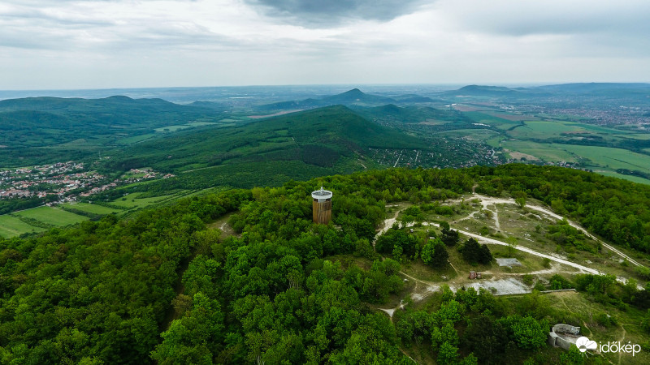

Pilis-tető

A Pilis-tető a Pilis hegység legmagasabb pontja, 756 méter magas. A Dunántúli-középhegység egyik legjelentősebb csúcsa, amely természeti és geológiai érdekességeivel, valamint csodálatos panorámájával vonzza a természet szerelmeseit. A Pilis-tető környékén gazdag növény- és állatvilág található, melyek a hegység egyedülálló ökoszisztémáját alkotják. A terület mészkő- és dolomittartalma miatt különleges sziklaalakzatok és barlangok jellemzik, melyek felfedezése izgalmas kalandot nyújt a túrázóknak. A csúcsról tiszta időben messzire ellátni, sőt, a budapesti panoráma is jól látható. A környéken jól kiépített túraútvonalak vezetnek, amelyek különböző nehézségi fokozatúak, így kezdők és haladók is megtalálják a számukra megfelelőt. A Pilis-tető a természetkedvelők mellett a geológusok és fotósok kedvelt célpontja is, hiszen a természeti szépségek és változatos tájak bőséges inspirációt nyújtanak. Az évszakok változásával a Pilis-tető hangulata is folyamatosan megújul, így minden évszakban különleges élményt kínál.
A Pilis-tető mészkő és dolomit alkotta sziklákból áll, amelyek sok különleges sziklaalakzatot és barlangot hoztak létre. Ezek a kőzetek különösen érzékenyek a víz és a szél eróziójára, így a táj folyamatosan változik, ami érdekes látványt nyújt.
A Pilis-tető környékén gazdag növény- és állatvilág található. Itt élnek többek között ritka orchideafajok, védett rovarok, valamint erdei madarak és emlősök. A terület részét képezi a Pilisi Parkerdő és természetvédelmi terület, így kiemelt figyelmet kap a természetvédelem.
A Pilis-tető népszerű kirándulóhely, könnyen megközelíthető túraútvonalakkal. A csúcson található kilátópontról panorámás kilátás nyílik a Dunakanyarra, a Börzsönyre és a Budai-hegységre. A környéken több tanösvény és pihenőhely található, így ideális hely családok és természetjárók számára egyaránt.